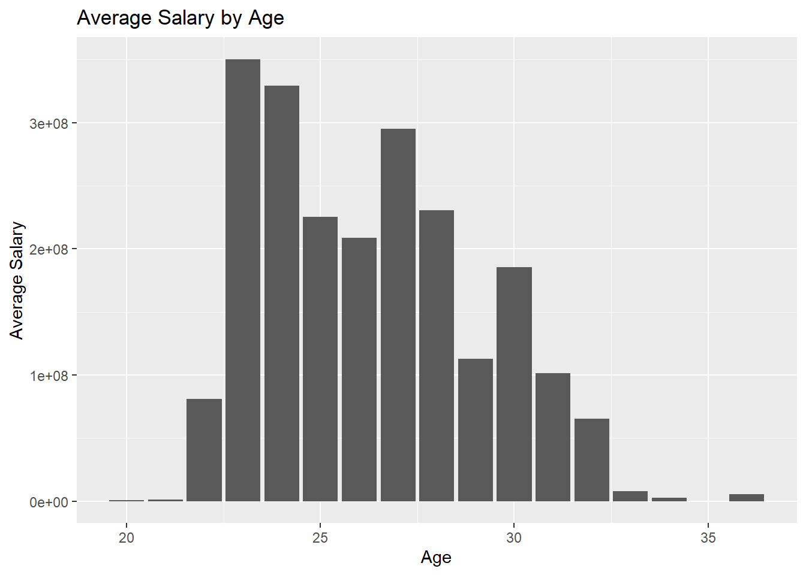
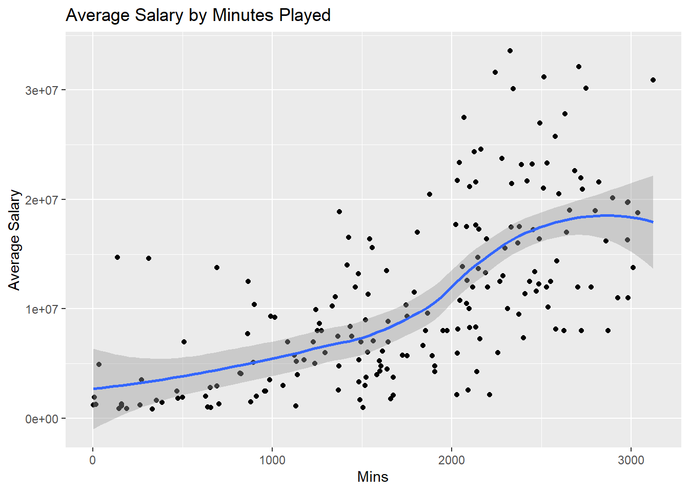
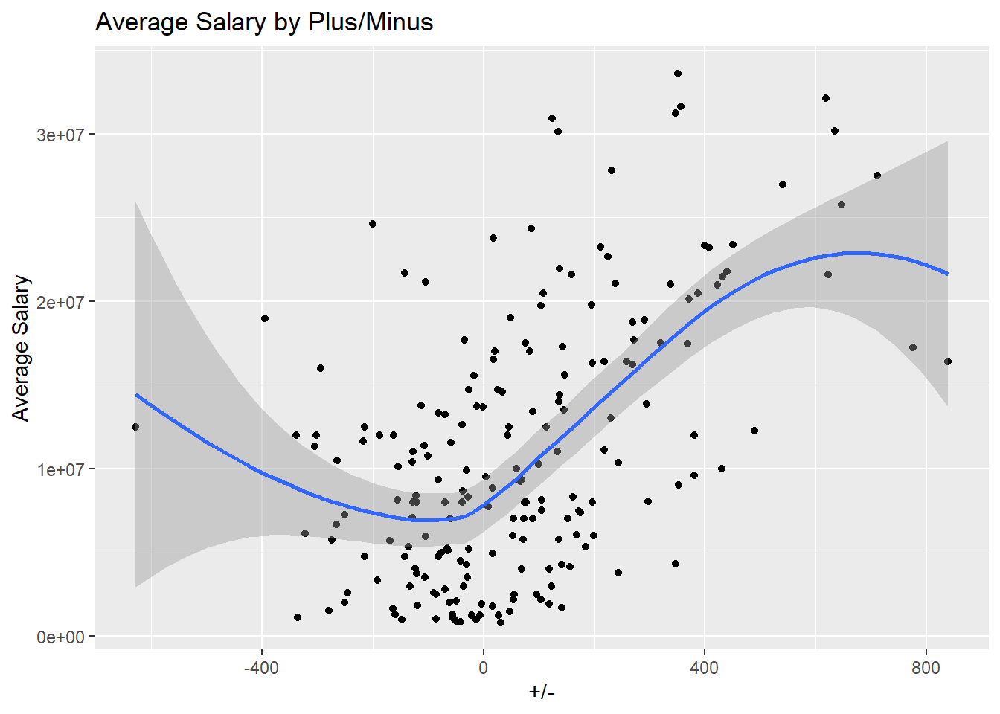
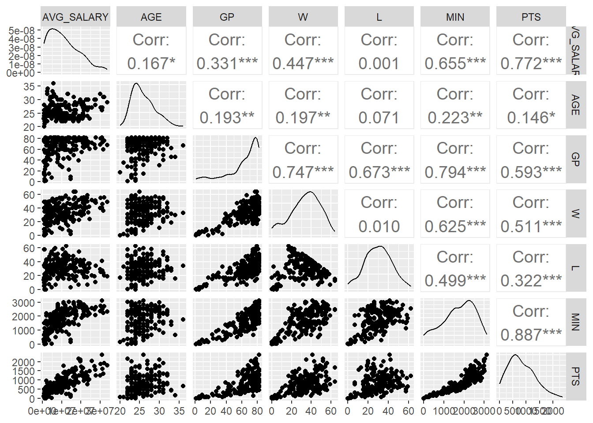
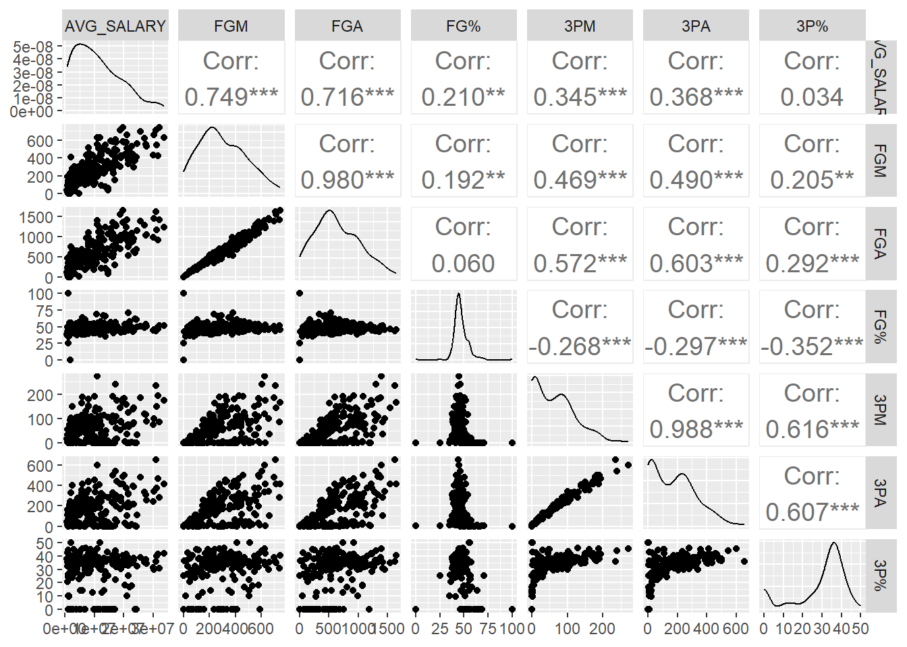
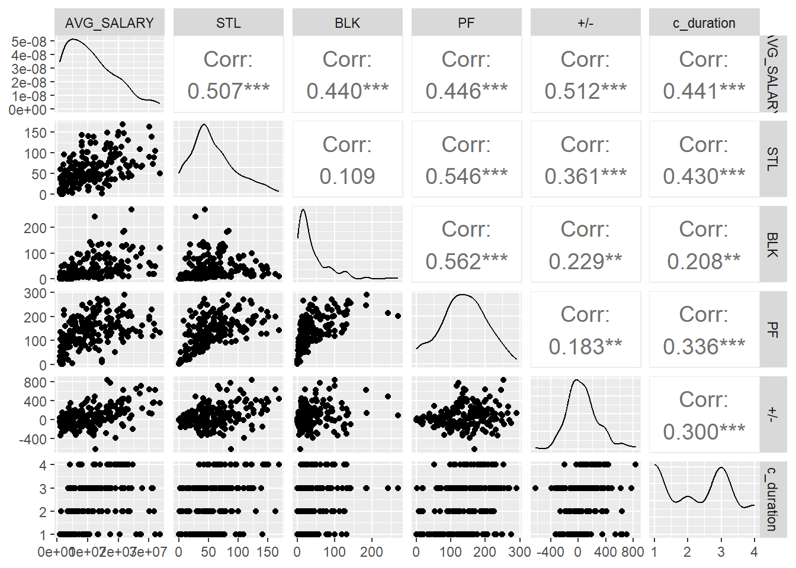
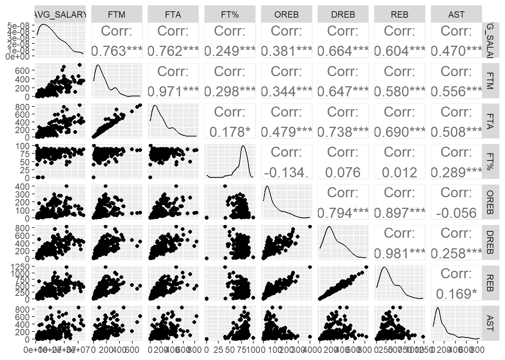
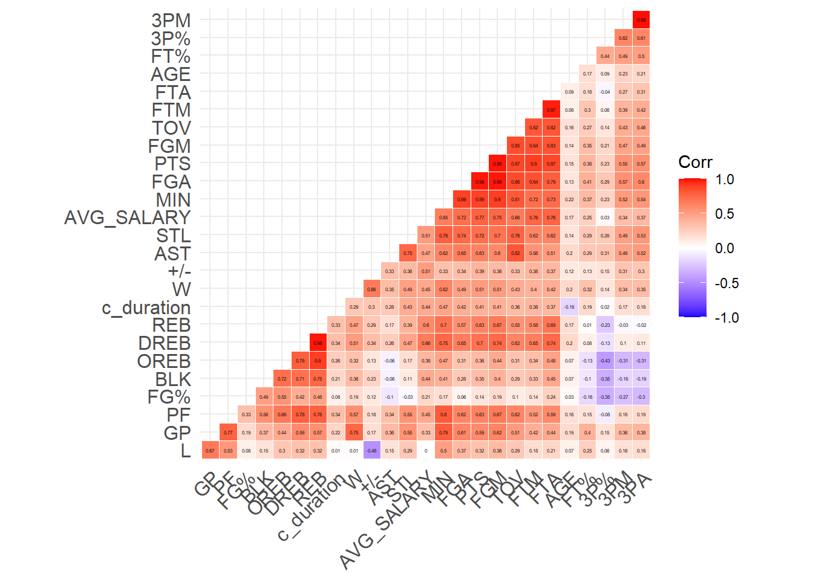
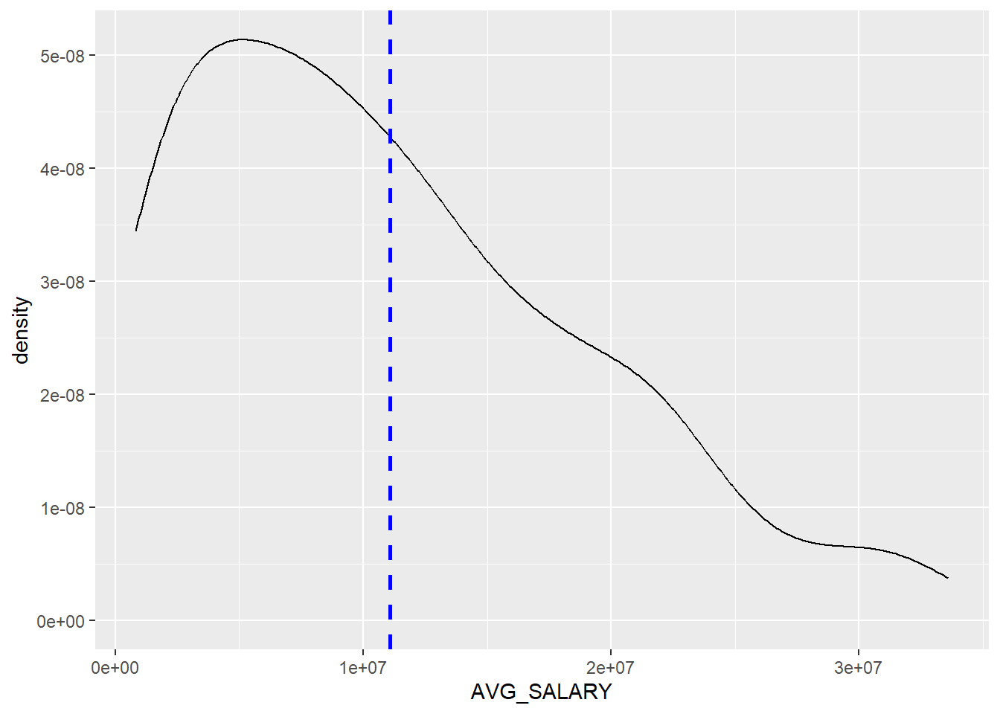

Code
library(alr4)
library(tinytex)
library(summarytools)
library(tidyverse)
library(ggplot2)
library(splines)
library(aod)
library(DescTools)
library(MASS)
library(leaps)
library(GGally)
library(hrbrthemes)
knitr::opts_chunk$set(echo = TRUE)library(alr4)
library(tinytex)
library(summarytools)
library(tidyverse)
library(ggplot2)
library(splines)
library(aod)
library(DescTools)
library(MASS)
library(leaps)
library(GGally)
library(hrbrthemes)
knitr::opts_chunk$set(echo = TRUE)Being a General Manager in the NBA comes with a ton of decisions. One of the most important decisions a GM can make is how much they pay the players on their team. It is so important to pay the players the right amount in order to build the strongest roster. Overpaying a player will hurt a teams cap space, meaning that the team will not be able to sign good players because they do not have enough money to afford them. My motivation for this project its to see if Machine Learning techniques can correctly predict a players salary. The idea is if I am able to create a model that performs well enough, then it could be used as a tool to determine a players salary for their next contract. Here I will perform different regression methods to predict players salary and then used the best method for prediction.
The dataset I am using comes from Kaggle. The dataset contains information about player names, time span of the contract, avg salary per year and all stats that player accumulated during NBA season before signing their next contract. The scope of the data is as follows: - There are only contracts signed since 2010/2011 season to 2019/2020 season. - Only includes players that are active in 2020/2021 season. - Doesn’t include rookie or retained contracts. - Doesn’t include contracts for player that haven’t played year before the signing the contract.
This is a good scope because I want to use modern players contracts for future predictions. The limitation of only including players that are active in 20/21 means that these players were able to earn multiple contracts of the 10 year span, which validates them as players who are worth to continuing paying. Having this removes players who had massive contracts early in their career and then faded out quickly after their primes.
df<- read_csv("_data/nba_contracts_history.csv")Rows: 199 Columns: 28
── Column specification ────────────────────────────────────────────────────────
Delimiter: ","
chr (1): NAME
dbl (27): CONTRACT_START, CONTRACT_END, AVG_SALARY, AGE, GP, W, L, MIN, PTS,...
ℹ Use `spec()` to retrieve the full column specification for this data.
ℹ Specify the column types or set `show_col_types = FALSE` to quiet this message.df# A tibble: 199 × 28
NAME CONTR…¹ CONTR…² AVG_S…³ AGE GP W L MIN PTS FGM FGA
<chr> <dbl> <dbl> <dbl> <dbl> <dbl> <dbl> <dbl> <dbl> <dbl> <dbl> <dbl>
1 Wesl… 2019 2020 2.56e6 32 69 27 42 2091 840 279 698
2 Broo… 2015 2017 2.12e7 27 72 34 38 2100 1236 506 987
3 DeAn… 2011 2014 1.08e7 22 80 31 49 2047 566 234 341
4 Mark… 2015 2018 8.14e6 25 82 39 43 2581 1258 512 1100
5 Dwig… 2018 2019 1.34e7 32 81 35 46 2463 1347 506 911
6 Aust… 2015 2016 7.06e6 22 76 46 30 1563 530 203 496
7 Wayn… 2016 2017 6.14e6 28 76 18 58 1615 586 218 561
8 JaMy… 2019 2020 4.77e6 29 65 31 34 1371 611 230 476
9 Kyle… 2015 2018 4.05e6 25 51 15 36 824 294 119 242
10 Trev… 2014 2017 8 e6 28 77 41 36 2723 1107 389 853
# … with 189 more rows, 16 more variables: `FG%` <dbl>, `3PM` <dbl>,
# `3PA` <dbl>, `3P%` <dbl>, FTM <dbl>, FTA <dbl>, `FT%` <dbl>, OREB <dbl>,
# DREB <dbl>, REB <dbl>, AST <dbl>, TOV <dbl>, STL <dbl>, BLK <dbl>,
# PF <dbl>, `+/-` <dbl>, and abbreviated variable names ¹CONTRACT_START,
# ²CONTRACT_END, ³AVG_SALARYdf<- df %>% mutate(c_duration = CONTRACT_END -CONTRACT_START)After loading in the data I can see it has 199 instances with 29 features. Some features will be removed such as player name, CONTRACT_START and CONTRACT_end. After EDA I will remove any features that interfere with my regression analysis. The only variable mutation I did was c_duration, which is how long a players contract lasted.
ggplot(data=df, aes(x=AGE, y=AVG_SALARY)) +
geom_bar(stat="identity") +
labs(title = "Average Salary by Age", x = "Age" ,y= "Average Salary")
The first relationship I wanted to visualize was Average salary and Age. Age is very important when thinking about how much to pay someone because you want to give them a contract that shows how good they can perform for that length of contract. I can see that average salary peaks at age 23 and again rises at 27 and then 30. This make sense because young players who are really good will receive a massive 2nd contract (contract after rookie deal). The peaks at 27 and 30 could be from players signing their 3rd or 4th contracts but make less money due to their age.
print(dfSummary(df, varnumbers = FALSE,
plain.ascii = FALSE,
style = "grid",
graph.magnif = 0.70,
valid.col = FALSE),
method = 'render',
table.classes = 'table-condensed')| Variable | Stats / Values | Freqs (% of Valid) | Graph | Missing | ||||||||||||||||||||||||||||||||||||||||||||||||||||||||||
|---|---|---|---|---|---|---|---|---|---|---|---|---|---|---|---|---|---|---|---|---|---|---|---|---|---|---|---|---|---|---|---|---|---|---|---|---|---|---|---|---|---|---|---|---|---|---|---|---|---|---|---|---|---|---|---|---|---|---|---|---|---|---|
| NAME [character] |
|
|
 |
0 (0.0%) | ||||||||||||||||||||||||||||||||||||||||||||||||||||||||||
| CONTRACT_START [numeric] |
|
|
 |
0 (0.0%) | ||||||||||||||||||||||||||||||||||||||||||||||||||||||||||
| CONTRACT_END [numeric] |
|
|
 |
0 (0.0%) | ||||||||||||||||||||||||||||||||||||||||||||||||||||||||||
| AVG_SALARY [numeric] |
|
172 distinct values |  |
0 (0.0%) | ||||||||||||||||||||||||||||||||||||||||||||||||||||||||||
| AGE [numeric] |
|
16 distinct values |  |
0 (0.0%) | ||||||||||||||||||||||||||||||||||||||||||||||||||||||||||
| GP [numeric] |
|
59 distinct values |  |
0 (0.0%) | ||||||||||||||||||||||||||||||||||||||||||||||||||||||||||
| W [numeric] |
|
56 distinct values |  |
0 (0.0%) | ||||||||||||||||||||||||||||||||||||||||||||||||||||||||||
| L [numeric] |
|
53 distinct values |  |
0 (0.0%) | ||||||||||||||||||||||||||||||||||||||||||||||||||||||||||
| MIN [numeric] |
|
193 distinct values |  |
0 (0.0%) | ||||||||||||||||||||||||||||||||||||||||||||||||||||||||||
| PTS [numeric] |
|
186 distinct values |  |
0 (0.0%) | ||||||||||||||||||||||||||||||||||||||||||||||||||||||||||
| FGM [numeric] |
|
172 distinct values |  |
0 (0.0%) | ||||||||||||||||||||||||||||||||||||||||||||||||||||||||||
| FGA [numeric] |
|
189 distinct values |  |
0 (0.0%) | ||||||||||||||||||||||||||||||||||||||||||||||||||||||||||
| FG% [numeric] |
|
131 distinct values |  |
0 (0.0%) | ||||||||||||||||||||||||||||||||||||||||||||||||||||||||||
| 3PM [numeric] |
|
111 distinct values |  |
0 (0.0%) | ||||||||||||||||||||||||||||||||||||||||||||||||||||||||||
| 3PA [numeric] |
|
139 distinct values |  |
0 (0.0%) | ||||||||||||||||||||||||||||||||||||||||||||||||||||||||||
| 3P% [numeric] |
|
110 distinct values |  |
0 (0.0%) | ||||||||||||||||||||||||||||||||||||||||||||||||||||||||||
| FTM [numeric] |
|
143 distinct values |  |
0 (0.0%) | ||||||||||||||||||||||||||||||||||||||||||||||||||||||||||
| FTA [numeric] |
|
162 distinct values |  |
0 (0.0%) | ||||||||||||||||||||||||||||||||||||||||||||||||||||||||||
| FT% [numeric] |
|
147 distinct values |  |
0 (0.0%) | ||||||||||||||||||||||||||||||||||||||||||||||||||||||||||
| OREB [numeric] |
|
117 distinct values |  |
0 (0.0%) | ||||||||||||||||||||||||||||||||||||||||||||||||||||||||||
| DREB [numeric] |
|
167 distinct values |  |
0 (0.0%) | ||||||||||||||||||||||||||||||||||||||||||||||||||||||||||
| REB [numeric] |
|
169 distinct values |  |
0 (0.0%) | ||||||||||||||||||||||||||||||||||||||||||||||||||||||||||
| AST [numeric] |
|
147 distinct values |  |
0 (0.0%) | ||||||||||||||||||||||||||||||||||||||||||||||||||||||||||
| TOV [numeric] |
|
138 distinct values |  |
0 (0.0%) | ||||||||||||||||||||||||||||||||||||||||||||||||||||||||||
| STL [numeric] |
|
100 distinct values |  |
0 (0.0%) | ||||||||||||||||||||||||||||||||||||||||||||||||||||||||||
| BLK [numeric] |
|
83 distinct values |  |
0 (0.0%) | ||||||||||||||||||||||||||||||||||||||||||||||||||||||||||
| PF [numeric] |
|
135 distinct values |  |
0 (0.0%) | ||||||||||||||||||||||||||||||||||||||||||||||||||||||||||
| +/- [numeric] |
|
171 distinct values |  |
0 (0.0%) | ||||||||||||||||||||||||||||||||||||||||||||||||||||||||||
| c_duration [numeric] |
|
|
 |
0 (0.0%) |
Generated by summarytools 1.0.1 (R version 4.2.0)
2023-06-12
Here I created summary statistics of the dataset using SummaryTools. The two stats that stood out to me was the mean games played and mean minutes played. The GP and MIN mean values are 64.2 and 1747, respectively. This implies that in order to be considered for another contract, players must play most of the season and play about 21 minutes per game. I would say that if you looked at all the means and medians of each feature, then those values represent a player who will get another NBA contract.
ggplot(data = df, mapping = aes(x = MIN, y = AVG_SALARY)) +
geom_point() +
geom_smooth() +
labs(title = "Average Salary by Minutes Played", x = "Mins" ,y= "Average Salary")
Next I wanted to check the relationship between Minutes played and Average Salary. I can see that their relationship is non-linear but positive. I see an increase of salary once a player is playing roughly 1750 minutes but drops off around 2500 minutes.The positive relationship could suggest that minutes played can be a good predictor.
ggplot(data = df, mapping = aes(x = `+/-`, y = AVG_SALARY)) +
geom_point() +
geom_smooth() +
labs(title = "Average Salary by Plus/Minus", x = "+/-" ,y= "Average Salary")
Here I wanted to see the relationship between +/- and Average salary. +/- is a sports statistic used to measure a player’s impact on the game, represented by the difference between their team’s total scoring versus their opponent’s when the player is in the game. I can see the relationship between +/- and Average Salary is non linear. I can see that there are players with awful +/- that are getting payed more than players with high +/-. I also see a lot of data grouped around 0 with low salaries, meaning these players probably did not play much.
df %>% filter(`+/-` < -300)# A tibble: 7 × 29
NAME CONTR…¹ CONTR…² AVG_S…³ AGE GP W L MIN PTS FGM FGA
<chr> <dbl> <dbl> <dbl> <dbl> <dbl> <dbl> <dbl> <dbl> <dbl> <dbl> <dbl>
1 Wayne… 2016 2017 6.14e6 28 76 18 58 1615 586 218 561
2 JaVal… 2012 2015 1.13e7 24 61 22 39 1535 691 307 552
3 Gordo… 2014 2017 1.90e7 24 77 23 54 2800 1248 426 1032
4 Jorda… 2016 2019 1.25e7 24 79 17 62 2552 1225 475 1098
5 Derri… 2014 2017 1.2 e7 22 73 25 48 2201 970 390 747
6 JaKar… 2015 2016 1.10e6 22 74 17 57 1131 386 146 346
7 Nikol… 2015 2018 1.2 e7 24 74 21 53 2529 1428 631 1206
# … with 17 more variables: `FG%` <dbl>, `3PM` <dbl>, `3PA` <dbl>, `3P%` <dbl>,
# FTM <dbl>, FTA <dbl>, `FT%` <dbl>, OREB <dbl>, DREB <dbl>, REB <dbl>,
# AST <dbl>, TOV <dbl>, STL <dbl>, BLK <dbl>, PF <dbl>, `+/-` <dbl>,
# c_duration <dbl>, and abbreviated variable names ¹CONTRACT_START,
# ²CONTRACT_END, ³AVG_SALARYHere I investigate the players with terrible +/-. Some of these players are getting paid well but their teams are so bad that their +/- statistic is negative. This makes me believe that non-linear regression methods would be useful if this feature is used for prediction of salary.
df %>% dplyr::select(-c(NAME,CONTRACT_START,CONTRACT_END)) %>%
ggpairs(columns=c(1, 2:7),
upper=list(continuous=wrap('cor',size=5)),
lower=list(combo=wrap("facethist",bins=30)),
diag=list(continuous=wrap("densityDiag"),alpha=0.5))
df %>% dplyr::select(-c(NAME,CONTRACT_START,CONTRACT_END)) %>%
ggpairs(columns=c(1, 8:13),
upper=list(continuous=wrap('cor',size=5)),
lower=list(combo=wrap("facethist",bins=30)),
diag=list(continuous=wrap("densityDiag"),alpha=0.5))
df %>% dplyr::select(-c(NAME,CONTRACT_START,CONTRACT_END)) %>%
ggpairs(columns=c(1, 22:26),
upper=list(continuous=wrap('cor',size=5)),
lower=list(combo=wrap("facethist",bins=30)),
diag=list(continuous=wrap("densityDiag"),alpha=0.5))
df %>% dplyr::select(-c(NAME,CONTRACT_START,CONTRACT_END)) %>%
ggpairs(columns=c(1, 14:20),
upper=list(continuous=wrap('cor',size=5)),
lower=list(combo=wrap("facethist",bins=30)),
diag=list(continuous=wrap("densityDiag"),alpha=0.5))
library(ggcorrplot)
df %>% dplyr::select(-c(NAME,CONTRACT_START,CONTRACT_END)) %>%
cor() %>%
ggcorrplot(hc.order = TRUE, type = "lower",outline.col = "white",lab=TRUE, lab_size=1)
Here I created 3 ggpairs plots and a correlation matrix to investigate the correlations between my target variable and and features. I am looking for strong and weak correlations. Based on the correlation matrix, I see a mixture or strong and weak correlations between features and my target variable, Average Salary. This makes me believe that non linear regression methods will perform better than linear regression methods on this dataset.
df %>% ggplot(aes(x=AVG_SALARY)) +
geom_density() +
geom_vline(aes(xintercept=mean(AVG_SALARY)),
color="blue", linetype="dashed", size=1)
df %>% dplyr::select(AVG_SALARY) %>%
summarise(mean = mean(AVG_SALARY))# A tibble: 1 × 1
mean
<dbl>
1 11073609.Here I wanted to look at the distribution of my target variable. I can see the distribution is not normal and skewed right. Seeing this makes me think that more flexible methods will work better when I create my regression models.
For my evaluation metric, I will use Root Mean Squared Logarithmic Error (RMSLE). I am choosing RMSLE because my predicted and actual values of my target variable (salary) are large integers, so by taking the logs of them it will remove any penalization of those huge differences between those values. My target variable has a skewed distribution and a large range, so RMSLE is a good fit because prediction errors of low and high salary will be treated evenly.
My first step in pre-processing my dataset was to remove any features based off of logic. I removed the players names, their wins, their loses, their contract start year and contract end year. I removed wins and loses because that is a team statistic and I do not believe that will have an effect in determining salary. I removed contract start and end years because I created a variable using both of them. The variable I created was c_duration, which is the difference between CONTRACT_START and CONTRACT_END. I did not remove any other features from my dataset because all remaining features are related to the players performance and availability during a season. I did not have any missing data in my dataset so I do not need any data imputation. In order to use Ridge and SVM regression, I had to scale my training, validation and test data using the StandardScaler(). For my model selection and analysis, I will be using Python.
The methods I will use are SVM, Ridge, Random Forrest, and Gradient Boosting Decision Trees for regression. I will use Grid Search cross-validation with 5 folds in order to tune the hyperparmaters for each model. In this section I will provide the best parameters selected from Grid Search CV, training error, validation error, and testing error for all methods.
import numpy as np
import pandas as pd
from sklearn.model_selection import train_test_split
from sklearn.preprocessing import OrdinalEncoder
from sklearn.linear_model import Ridge
from sklearn.linear_model import Lasso
from sklearn.model_selection import GridSearchCV
from sklearn.metrics import make_scorer, mean_squared_log_error, mean_squared_error
from scipy.spatial.distance import cdist
from scipy.stats import mode
from sklearn.preprocessing import LabelEncoder
from sklearn.preprocessing import MinMaxScaler
import warnings
warnings.filterwarnings('ignore')df = pd.read_csv("_data/nba_contracts_history.csv")#Creating variable c_duration
df["c_duration"] = df["CONTRACT_END"] - df["CONTRACT_START"] #Creates set of features I will use
features = df.drop(["NAME","CONTRACT_START", "CONTRACT_END","AVG_SALARY","W","L"], axis=1)#sub-setting my target variable, Average Salary
target = df['AVG_SALARY'].to_numpy()Here is my data splits, 70% training, 15% validation and 15% Test.
X_train, X_test, Y_train, Y_test = train_test_split(features, target, test_size=0.3, random_state=42)
X_valid, X_test, Y_valid, Y_test = train_test_split(X_test, Y_test, test_size=0.5, random_state= 42)Here I check to see if the data is split up correctly.
print(X_train.shape, X_valid.shape, X_test.shape)(139, 23) (30, 23) (30, 23)print(Y_train.shape, Y_valid.shape, Y_test.shape)(139,) (30,) (30,)Here I use the make_scorer() function so that I can call RMSLE during Grid Search Cross Validation.
RMSLE = make_scorer(mean_squared_log_error, squared=False)For hyperparameter tuning, I chose to tune n_estimators, max_features, min_samples_split and min_sample_leafs. From Sckit learn’s documentation, it states that n_estimators and max_features are the main parameters to tune, so I will follow the documentations suggestion. I included min_sample_split and min_sample_leafs because I want to control my model for overfitting. By increasing the values of these two parameters, it will help prevent my model from overfitting.
from sklearn.ensemble import RandomForestRegressor
RF = RandomForestRegressor()
param_grid_RF = {
'n_estimators': [100, 200, 300, 400],
'max_features': [None, 1.0],
'min_samples_split': [2, 4, 6 ,8],
'min_samples_leaf': [1, 2 ,4, 6, 8]}
gridRF= GridSearchCV(RF, param_grid_RF,scoring = RMSLE, cv=5)
gridRF.fit(X_train, Y_train)GridSearchCV(cv=5, estimator=RandomForestRegressor(),
param_grid={'max_features': [None, 1.0],
'min_samples_leaf': [1, 2, 4, 6, 8],
'min_samples_split': [2, 4, 6, 8],
'n_estimators': [100, 200, 300, 400]},
scoring=make_scorer(mean_squared_log_error, squared=False))print("Best parameters:",gridRF.best_params_)Best parameters: {'max_features': None, 'min_samples_leaf': 1, 'min_samples_split': 6, 'n_estimators': 100}print("Training error (RMSLE):", gridRF.best_score_)Training error (RMSLE): 0.5703407520704454Checking Validation Error for Random Forests.
best_model_RF = gridRF.best_estimator_
predict_y_RF = best_model_RF.predict(X_valid)
RF_rmsle = mean_squared_log_error(Y_valid, predict_y_RF,squared=False)
print("Validation error (RMSLE):",RF_rmsle)Validation error (RMSLE): 0.45497526641066893Scaling data for SVM and Ridge Regression.
from sklearn.preprocessing import StandardScaler
scaler = StandardScaler()
X_train_scaled = scaler.fit_transform(X_train)
X_valid_scaled = scaler.transform(X_valid)
X_test_scaled = scaler.transform(X_test)The hyperparameters I tuned from SVR are C, gamma and kernel. I needed to tune for Kernel so that my model finds the best hyper plane that fits the datapoints from my target variable. The kernel will deal with the non-linear relationship on between my features and target variable. Tuning for C and gamma will help my model from overfitting.
from sklearn.svm import SVR
SVR = SVR()
param_grid_SVR = {'C': [0.1, 1, 10, 100, 1000],
'gamma': [0.0001, 0.001,0.01, 0.1, 1],
'kernel': ['rbf', 'poly']}
gridSVR= GridSearchCV(SVR, param_grid_SVR, scoring = RMSLE, cv=5)
gridSVR.fit(X_train_scaled, Y_train)GridSearchCV(cv=5, estimator=SVR(),
param_grid={'C': [0.1, 1, 10, 100, 1000],
'gamma': [0.0001, 0.001, 0.01, 0.1, 1],
'kernel': ['rbf', 'poly']},
scoring=make_scorer(mean_squared_log_error, squared=False))print("Best parameters:",gridSVR.best_params_)Best parameters: {'C': 0.1, 'gamma': 0.0001, 'kernel': 'poly'}print("Training error (RMSLE):", gridSVR.best_score_)Training error (RMSLE): 1.0135970157480874Checking Validation Error for SVR.
best_model_SVR = gridSVR.best_estimator_
predict_y_SVR = best_model_SVR.predict(X_valid_scaled)
SVR_rmsle = mean_squared_log_error(Y_valid, predict_y_SVR,squared=False)
print("Validation error (RMSLE):", SVR_rmsle)Validation error (RMSLE): 0.6805718407616901For Ridge Regression, The only hyperparameter I tuned was alpha, which is the penalty term. I chose to search through small, intermediate, and large values of alpha.
ridge = Ridge()
param_grid_ridge = {'alpha':np.concatenate((np.arange(0.1,2,0.1), np.arange(2, 5, 0.5), np.arange(5, 105, 5)))}
gridRidge = GridSearchCV(ridge, param_grid_ridge,scoring = RMSLE, cv=5)
gridRidge.fit(X_train_scaled, Y_train)GridSearchCV(cv=5, estimator=Ridge(),
param_grid={'alpha': array([ 0.1, 0.2, 0.3, 0.4, 0.5, 0.6, 0.7, 0.8, 0.9,
1. , 1.1, 1.2, 1.3, 1.4, 1.5, 1.6, 1.7, 1.8,
1.9, 2. , 2.5, 3. , 3.5, 4. , 4.5, 5. , 10. ,
15. , 20. , 25. , 30. , 35. , 40. , 45. , 50. , 55. ,
60. , 65. , 70. , 75. , 80. , 85. , 90. , 95. , 100. ])},
scoring=make_scorer(mean_squared_log_error, squared=False))print("Best parameters:", gridRidge.best_params_)Best parameters: {'alpha': 100.0}print("Training error (RMSLE):", gridRidge.best_score_)Training error (RMSLE): 0.5579904916871834Checking Validation Error for Ridge Regression.
best_model_ridge = gridRidge.best_estimator_
predict_y_ridge = best_model_ridge.predict(X_valid_scaled)
ridge_rmsle = mean_squared_log_error(Y_valid, predict_y_ridge,squared=False)
print("Validation error (RMSLE):", ridge_rmsle)Validation error (RMSLE): 0.5200462148165859The hyperparameters I chose to tune for the Gradient Boosting Decision Trees Regressor are n_estimators, learning_rate, and max_depth. GBDTR uses multiple shallow decision trees as weak learners to predict the residuals of the decision trees instead of the target variable. The idea here is use gradient descent to update the residuals after every tree until the model has run through all available trees (n_estimators). Learning rate controls how much the residuals are updated from tree to tree, which can also be described as the “size” of the step in gradient descent. Smaller values of learning rate will allow my model to generalize better on the validation and test data. Max_depth refers to the depth of each tree, which is important because it determines how weak the trees are in the ensemble.
from sklearn.ensemble import GradientBoostingRegressor
GBR = GradientBoostingRegressor()
param_grid_GBR = {
'n_estimators': [100, 200, 300, 400],
'learning_rate': [ 0.01, 0.1, 0.2,0.3],
'max_depth': [3,4,5,6,7,8]}
gridGBR= GridSearchCV(GBR, param_grid_GBR,scoring = RMSLE, cv=5)
gridGBR.fit(X_train, Y_train)GridSearchCV(cv=5, estimator=GradientBoostingRegressor(),
param_grid={'learning_rate': [0.01, 0.1, 0.2, 0.3],
'max_depth': [3, 4, 5, 6, 7, 8],
'n_estimators': [100, 200, 300, 400]},
scoring=make_scorer(mean_squared_log_error, squared=False))print("Best parameters:", gridGBR.best_params_)Best parameters: {'learning_rate': 0.01, 'max_depth': 6, 'n_estimators': 100}print("Training error (RMSLE):", gridGBR.best_score_)Training error (RMSLE): 0.7298632180107352Checking Validation Error for Gradient Boosting Decision Trees.
best_model_GBR = gridGBR.best_estimator_
predict_y_GBR = best_model_GBR.predict(X_valid)
GBR_rmsle = mean_squared_log_error(Y_valid, predict_y_GBR,squared=False)
print("Validation error (RMSLE):", GBR_rmsle)Validation error (RMSLE): 0.5732402442589972Checking Test Error for all models. Again I will list the best parameters selected from Grid Search CV.
best_model_RFRandomForestRegressor(max_features=None, min_samples_split=6)predict_test_RF = best_model_RF.predict(X_test)
RF_test_rmsle = mean_squared_log_error(Y_test, predict_test_RF,squared=False)
print("Test error (RMSLE):", RF_test_rmsle)Test error (RMSLE): 0.4986784364298934best_model_SVR SVR(C=0.1, gamma=0.0001, kernel='poly')predict_test_SVR = best_model_SVR.predict(X_test_scaled)
SVR_test_rmsle = mean_squared_log_error(Y_test, predict_test_SVR,squared=False)
print("Test error (RMSLE):", SVR_test_rmsle)Test error (RMSLE): 1.0137954511265557best_model_ridgeRidge(alpha=100.0)predict_test_ridge = best_model_ridge.predict(X_test_scaled)
ridge_test_rmsle = mean_squared_log_error(Y_test, predict_test_ridge,squared=False)
print("Test error (RMSLE):", ridge_test_rmsle)Test error (RMSLE): 0.5376660192539188
best_model_GBRGradientBoostingRegressor(learning_rate=0.01, max_depth=6)predict_test_GBR = best_model_GBR.predict(X_test)
GBR_test_rmsle = mean_squared_log_error(Y_test, predict_test_GBR,squared=False)
print("Test error (RMSLE):", GBR_test_rmsle)Test error (RMSLE): 0.7875342011788629Here I printed all training, validation, and testing errors for all models.
print("training error Random Forest (RMSLE):",gridRF.best_score_)training error Random Forest (RMSLE): 0.5703407520704454print("training error SVR (RMSLE):",gridSVR.best_score_)training error SVR (RMSLE): 1.0135970157480874print("training error Ridge (RMSLE):",gridRidge.best_score_)training error Ridge (RMSLE): 0.5579904916871834print("training error GBR (RMSLE):",gridGBR.best_score_)training error GBR (RMSLE): 0.7298632180107352print("validation error Random Forest (RMSLE):",RF_rmsle)validation error Random Forest (RMSLE): 0.45497526641066893print("validation error SVR (RMSLE):",SVR_rmsle)validation error SVR (RMSLE): 0.6805718407616901print("validation error Ridge (RMSLE):",ridge_rmsle)validation error Ridge (RMSLE): 0.5200462148165859print("validation error GBR (RMSLE):",GBR_rmsle)validation error GBR (RMSLE): 0.5732402442589972print("test error Random Forest (RMSLE):",RF_test_rmsle)test error Random Forest (RMSLE): 0.4986784364298934print("test error SVR (RMSLE):",SVR_test_rmsle)test error SVR (RMSLE): 1.0137954511265557print("test error Ridge (RMSLE):", ridge_test_rmsle)test error Ridge (RMSLE): 0.5376660192539188print("test error GBR (RMSLE):",GBR_test_rmsle)test error GBR (RMSLE): 0.7875342011788629Based on my results, the Random Forrest Regression performs the best out of all my methods. I believe it performs the best due to the fact that the hyperparameters dealing with overfitting. The hyperparameter min_samples_split reduces the number of splits that are happening in the decision trees, which shortens the depth of the tree. Having shorter tree allows for the model to generalize better because it will not rely on the structure of the training data as much. Therefore, this model has a good bias-variance trade off. This method is high in flexibility. Though this method performs the best, it is not the best for interpretability.
SVR performs the worst based on my results. I believe it performs poorly because of the low value of C selected from Cross-validation. In my model, the value of C that was selected is 0.1, which means the model allows for little misclassification of the training data. This leads to the model overfitting and having high variance because the model is too reliant on the training data.This method is high in flexibility. This model also has low interpretability.
Ridge Regression perform second best out of all my methods. I believe it performs well because of the high value of the tuning parameter. Alpha=100 helps reduce the variance in the the model. It seems that alpha=100 also keeps bias from increasing significantly. In terms of interpretability, Ridge is the most interpretable out of all of my methods. This method is low in flexibility.
Gradient Boosting Decision Trees Regressor did not perform well compared to Ridge and Random Forest. The reason why it performed poorly is because both the learning rate and number of estimators are too low. I can say that the model is biased and underfitting because when the learning rate is low, the residuals are only updated slightly before constructing the next tree. Here the learning rate is too low, so once the model reaches 100 trees (n_estimators), gradient descent will not reach the global minimum because of the lack of trees. This combination of low learning rate and n_estimators does not allow my model to reach the optimum error rate. This method is high in flexibility. In terms of interpretability, GBDTR has low interpretability.
One concern I have with my model is that it is only trained on players data from the previous season. Although this seems like the logical way of determining a players salary for the future, there are many other factors that go into determining a salary rather than just statistical information. For example, sometimes a players salary can be influenced by what other teams are giving their players. Another example includes players personal accolades, such as first team all NBA, All star team, defensive team of the year etc, can greatly increase ones salary if they earn one of these honors. Another concern I have with my model is that it does not include advanced metrics that capture more capabilities of a player. For example, My data does not include stats that determine how good a player is when defending on the perimeter, which could be a deal breaker when trying to get a good salary. Another concern is that some of contract data is from the early 2010s. Though this is somewhat recent, pay in the NBA increases every year so some of data instances are not scaled up to what the pay should be if this model was used in 2023. My last concern is that my dataset is really small. This is the case because there are only a fraction of players who have earned multiple contracts within the timespan of my data.
How to Address the Issues:
https://www.kaggle.com/datasets/jarosawjaworski/current-nba-players-contracts-history